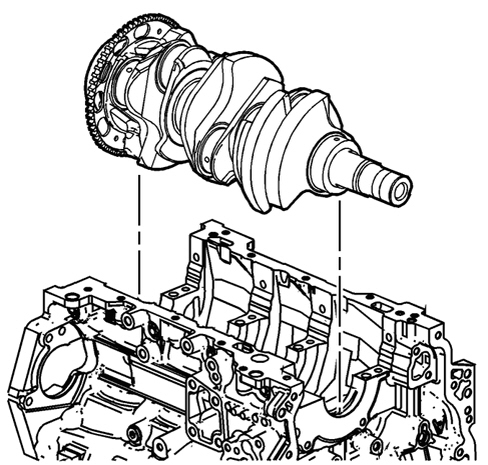
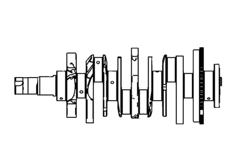
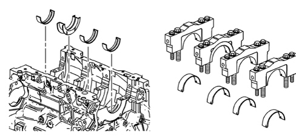

INTRODUCTION - CRANKSHAFT AND FLYWHEEL
- Path
- Descriptions > 10 ENGINE > 1024 CRANKSHAFT AND FLYWHEEL > INTRODUCTION - CRANKSHAFT AND FLYWHEEL
- Kind
- system description
- Applies to
- engines: 3.2 JTS; all production periods
- Interactive page
- https://sloeber94.github.io/elrnDB-aBrrSpdr/en/#/946001167
Applies to: engines: 3.2 JTS; all production periods
Crankshaft
It is made from forged, micro-alloyed steel; the bearings do not have any surface treatment but are rolled and polished.
The crankshaft is supported by four main journals, sustained by bearing supports and balanced by counter-weights. The flywheel for the rpm sensor is made from steel and is an interference fit at the back of the shaft.


The shaft thrust clearance is adjusted through the third main journal. As can be seen in the diagram, the housing for the thrust washer is located in the third main journal.

For the maintenance operations, it is advisable to grind the crankshaft main journals and the crankpins producing the recommended undersize (see TECHNICAL DATA).
Engine flywheel
The dual mass, DVA (dual mass vibration-damping flywheel), has one mass integral with the crankshaft and the other on the gearbox mainshaft with an interposed flexible torsional damping system.
The resonance points, located between 800 and 2200 rpm with conventional systems, are shifted toward lower rpms outside the service range.